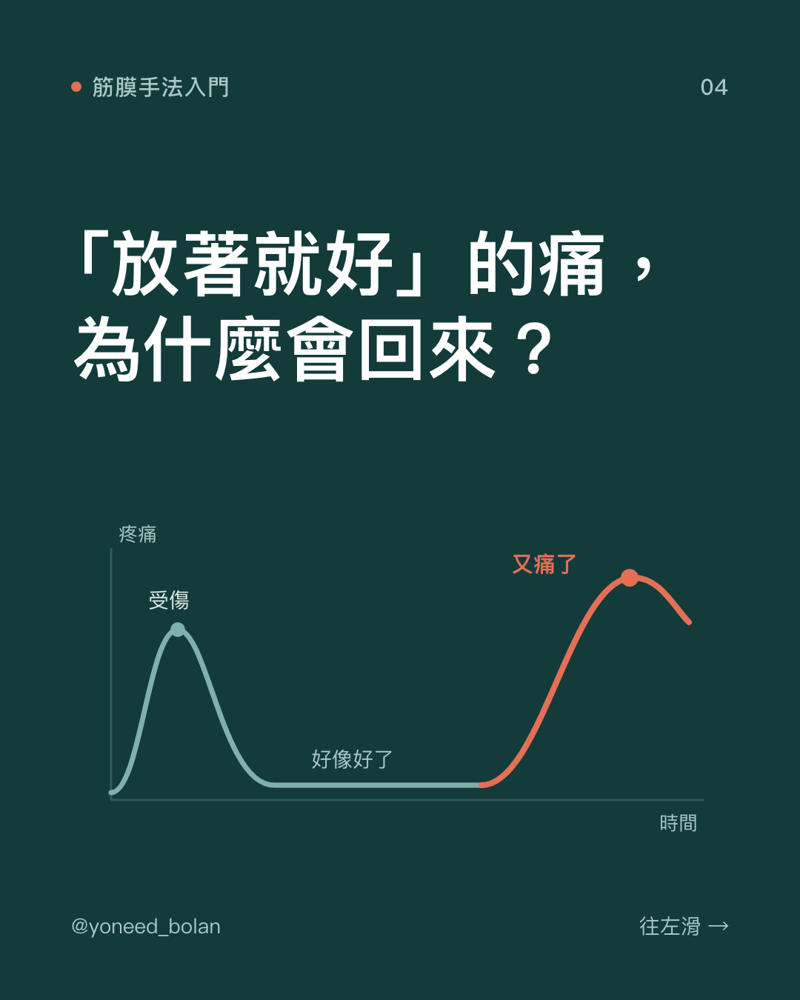
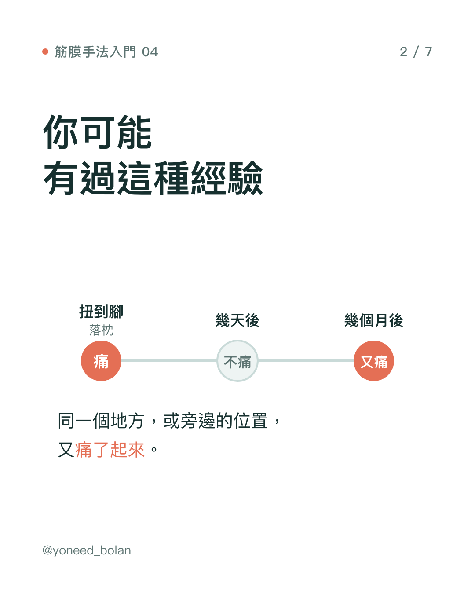
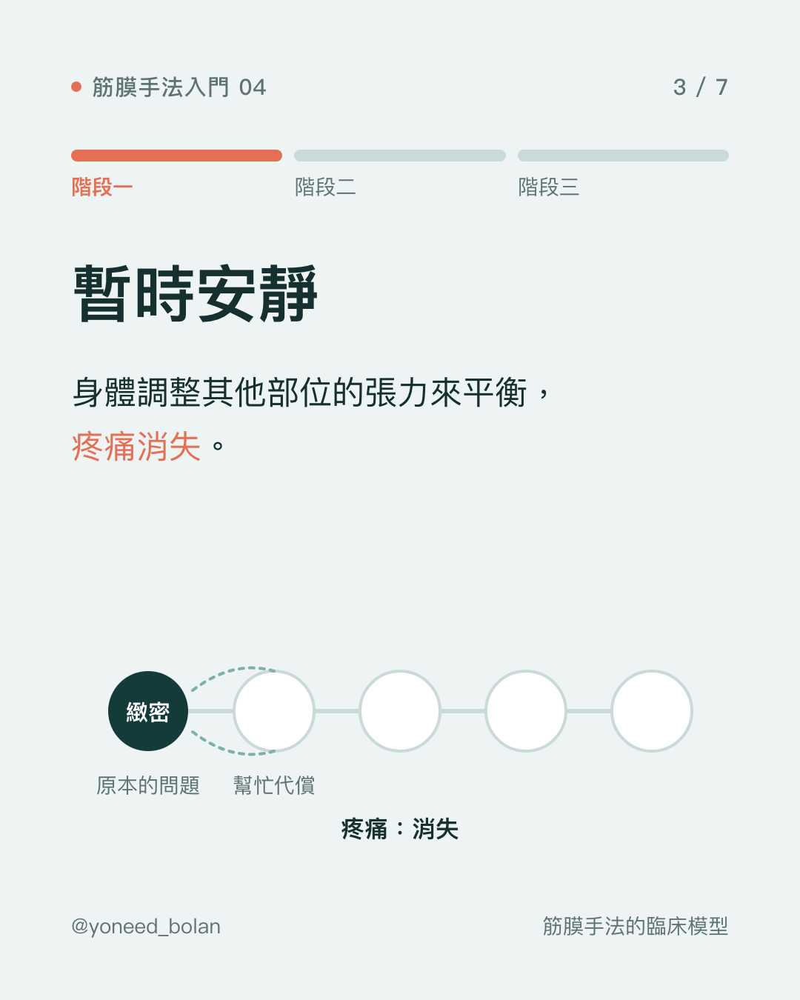
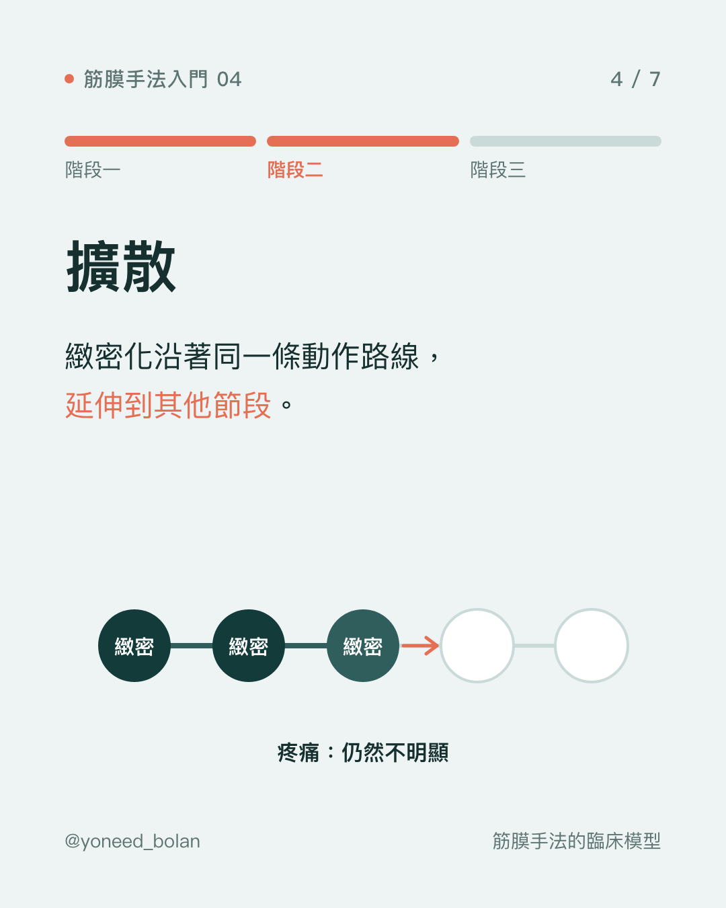
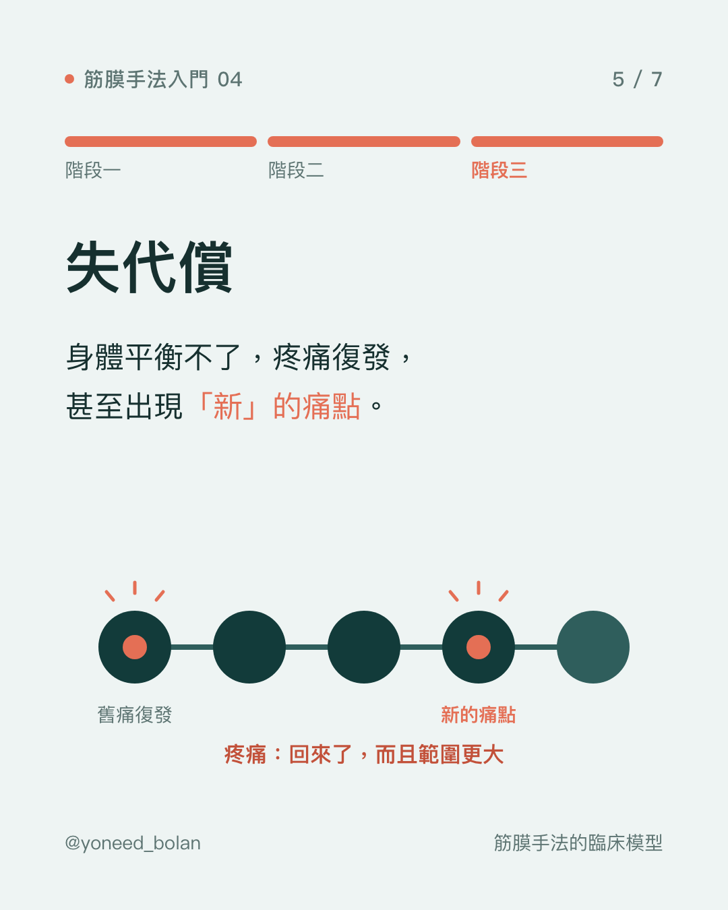
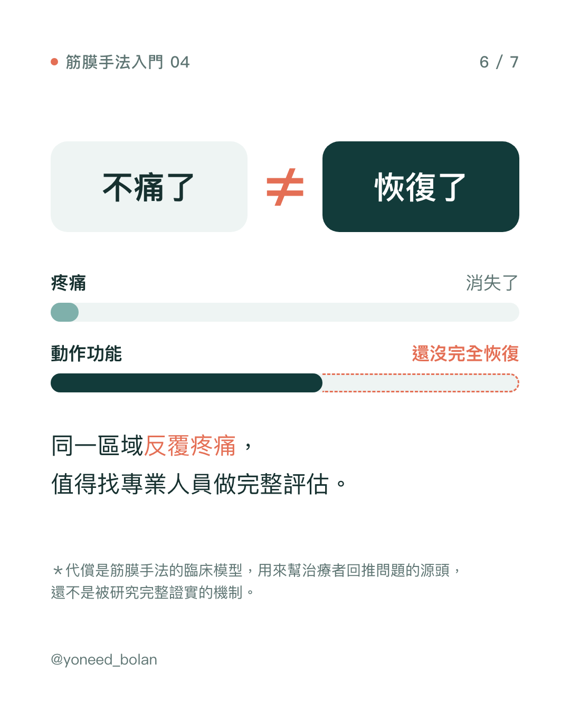

衛教文章・筋膜手法入門 04
為什麼「放著就好」的痛，會一直回來？代償的三個階段
- 筋膜手法用「代償」（compensation）解釋反覆發作的疼痛，分成三個階段：暫時安靜、擴散、失代償（decompensation）。
- 疼痛消失，不代表動作功能已經恢復。
- 最近的痛，源頭可能是好幾年前的舊傷。
- 代償是臨床模型，用來幫助治療者回推問題，還沒有被研究完整證實。






扭到腳、落枕，過幾天好像就不痛了。但有些人幾個月後，同一個地方或旁邊的位置又痛起來。這篇用筋膜手法的「代償」模型，說明這種反覆發作可能是怎麼來的。
什麼是代償？
身體很會調整。一個地方受傷、活動變差時，身體會自動用其他部位多出一點力、改變一點姿勢，讓你還是能走路、轉頭、拿東西。這種「用別的地方補位」的調整，就是代償。
代償本身不是壞事，它讓你在受傷後還能維持生活。問題在於，補位的部位長期承受額外的負荷，時間久了，也可能開始出狀況。
階段一：暫時安靜
受傷後，身體調整其他部位的張力來平衡，疼痛在幾天到幾週內消失。多數人會在這個階段認定「好了」。
但依筋膜手法的觀點，原本受傷的位置可能還留有緻密化（見第 02 篇），只是身體暫時平衡得過來，所以感覺不到。
階段二：擴散
沒有處理的緻密化，可能沿著同一條動作路線，延伸到相鄰的其他節段。例如腳踝扭傷後，走路時膝蓋和髖部的用力方式跟著改變。
這個階段，疼痛通常仍然不明顯。你可能只會覺得某個動作「卡卡的」、比較容易累，或是兩腳用起來不太一樣。
階段三：失代償
當身體再也平衡不了，疼痛就會復發，或是出現在「新」的位置。很多人在這時候會把痛歸咎於最近做了什麼，例如前天搬了重物、最近跑步跑多了，卻忘了好幾年前那次扭傷。
最近的事件可能是壓垮駱駝的最後一根稻草，但不一定是唯一的原因。這也是評估時要仔細問受傷史的理由。
不痛了 ≠ 恢復了
這個模型最實用的提醒是：疼痛消失，和動作功能恢復，是兩件不同的事。
扭傷後疼痛可能幾天就退了，但關節的活動度、肌力、平衡感，可能需要更長的時間，有時還需要針對性的訓練才能恢復。如果只用「痛不痛」來判斷，很容易在功能還沒恢復時就回到原本的活動量。
以下情況，值得找專業人員做一次完整評估：
- 同一個區域反覆疼痛，例如一年內發作好幾次。
- 痛的位置會移動，或是一處好了另一處又開始痛。
- 舊傷之後，總覺得某個動作做起來跟受傷前不一樣。
重點整理
- 代償讓身體在受傷後還能運作，但補位的部位會承受額外負荷。
- 筋膜手法把反覆發作的疼痛分成暫時安靜、擴散、失代償三個階段。
- 不痛不代表恢復，功能是否回到受傷前，需要另外評估。
- 代償是臨床模型，不是已被完整證實的機制。
參考文獻
- Stecco L. Fascial Manipulation for Musculoskeletal Pain. Padova: Piccin; 2004.（筋膜手法教科書）